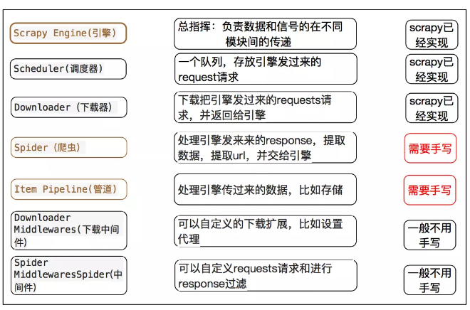

WEB数据管理知识梳理
第1讲 前言
本文是根据山东大学软件学院连莉老师的《WEB数据管理》课程课件所整理的。近三万字长文，实在充实。
第2讲 网络爬虫技术
一 、爬虫定义
一种自动获取网页内容的程序，是搜索引擎的重要组成部分。通俗的讲，也就是通过HTML源码解析来获得想要的内容
二、爬取过程
从一个或若干初始网页的URL开始，直到满足系统的一定停止条件。
三、 URL 判重
•访问标记
由于搜索引擎在爬取时要访问大量的网页，因此在查找网址l是否访问过及标记网址l已经访问时为了提高查找和访问效率通常建立一个散列，其中存放访问过每一个网址，为了减少这个散列表所占用的空间, 通常在其中存放网址经过散列函数（如MD5、SHA-1等）计算出的对应的固定长度的散列值，这样便可以在平均情况下O(1)的时间内查找和更新占用O(n)空间的网址列表（n为已访问的网址数目）。
四、 必须具有的功能
•4.1 礼貌性
Web服务器有显式或隐式的策略控制爬虫的访问
–只爬允许爬的内容、尊重 robots.txt
•隐式的礼貌:即使没有特别的说明，也不应该频繁的访问同一个网站
•显式的礼貌:根据网站站长的说明，选择允许爬取的部分进行爬取
•4.2 鲁棒性
能从采集器陷阱中跳出，能处理Web服务器的其他恶意行为
•4.3 性能和效率
充分利用不同的系统资源，包括处理器、存储器和网络带宽。优先抓取“有用的网页”
•BFS广度优先搜索优于DFS:
工程上，网络爬虫更应该定义为“如何在有限的时间里最多的爬下那些重要的网页”，我们一般认为一个网页的首页是相当重要的。
•DFS深度优先优于BFS:
与爬虫的分布式结构以及网络通信的握手成本有关，“握手”就是指下载服务器与网站的服务器建立通信的过程。实际网络爬虫是由成百上千万台服务器组成的分布式系统，对于某一个网页，一般由特定的一台或者几台服务器专门下载，这样可以避免握手次数太多。
•实际应用的网络爬虫不是对网页次序的简单BFS或者BFS，而是一个相对复杂的下载优先级排序的方法，管理这个系统的叫做“调度系统”(Scheduler)，会有一个Priority Queue。BFS成分更加多一些。
•DFS 要限定爬取的深度
在爬取时为了防止有些错误链接导致的无穷递归爬取，需要限定爬取的深度。此外层次越深的网页对用户来说可用的信息越少。
•4.4 分布式
可以在多台机器上分布式运行，添加更多机器后采集率应该提高
•分布式带来的问题
问题1、哈希表太大，一台下载服务器存不下。
问题2、每台下载服务器在开始下载前和完成下载后都要维护这张哈希表，这个存储哈希表的通信就成为爬虫系统的瓶颈。
•解决方法：
A、明确每台下载服务器的分工，即一看到某个URL就知道交给哪台服务器去执行
B、批量处理，减少通信的次数
•4.5 新鲜度
对原来抓取的网页进行更新
•需要为更新较快的页面提高刷新率
•含有那些突增的搜索关键字的网站会得到较快的更新频率。
•4.6 功能可扩展性
支持多方面的功能扩展，例如处理新的数据格式、新的抓取协议等。
五、爬虫分类
实际的采集器往往是几种采集技术的结合
5.1 基于整个Web的信息采集
•传统的采集方式：作为门户搜索引擎和大型的Web服务提供商的数据收集部分，是指从一些种子URL扩充到整个Web的信息采集
•优点：采集数据广，采集速度快，适用于广泛主题的搜索
•缺点：采集数据乱，数据利用率低，页面失效率高，采集周期长
开源工具Nutch：一个开源Java 实现的搜索引擎。它提供了我们运行自己的搜索引擎所需的全部工具。包括全文搜索和Web爬虫。
Nutch爬取：多线程；宽度优先（广度优先）；遵循机器人协议，先读取/robots.txt 然后判断是否允许访问；nutch中采用的是socket获得连接并getInputStream，实际调用的是protocol的插件。边爬取边解析：获取一个页面后，对其进行解析，存储原始页面和解析后的文档。并提取出链outlink；页面评分：解析页面时、更新crawldb时。
5.2 增量式Web信息采集
•在页面刷新时，只需要采集新产生的或者已经发生变化的页面，而对于没有变化的页面不进行采集
•预测变化的策略：
–基于统计的方法：观察网站的平均变化周期
–基于数据建模的方法：通过网页中变化估计模型和参数
•优点：极大地减小数据采集量进而极大地减小采集时空开销 。
•缺点：增加了一定的判别开销。网页相似度比较
5.3 基于主题的Web信息采集
•选择性的搜寻那些与预先定义好的主题集相关页面进行采集
–给定特定的种子URL
•目前是研究热点，垂直搜索
•优点:采集页面更加有针对性，采集效率更高。
•缺点:采集速度较慢，判别相关性带来较大的开销。
–采集系统首先保存一个经典的主题分类,每个主题分类都保存若干个内容样本
5.4 基于用户个性化的Web信息采集
•不同的用户对一个搜索引擎提交同一个检索词，他们期望的返回结果是不同的
–通过用户兴趣制导或与用户交互等灵活手段来采集信息 :用户画像profile、日志
第3讲 网页分析技术
对于HTML文档，有两种看待方式:一种是将文档看作字符流：正则表达式；一种是将文档看作树结构。基于DOM
一、正则表达式
规则表达式 Regular Expression，在代码中常简写为regex、regexp或RE
正则表达式是对字符串操作的一种逻辑公式，就是用事先定义好的一些特定字符、及这些特定字符的组合，组成一个“规则字符串”，用来表达对字符串的一种过滤逻辑。通常被用来检索、替换那些符合某个模式(规则)的文本。
正则表达式由一组普通字符和一组元字符组成的字符串，用来表示符合一定模式的一组字符串，常用于字符串处理，表单验证等场合，表示能力与正规文法相同。
^ 匹配开始位置，$ 匹配结束位置，. 匹配除换行符以外的任意字符，[0-9] 匹配单个数字，[0-9]+匹配多个数字， ? 问号代表前面的字符最多只可以出现一次（0次、或1次）
二、基于HTML DOM提取内容
•2.1 DOM：文档对象模型（document object model）
•DOM将一个XML文档转换成一个对象集合，然后可以任意处理该对象模型。
这一机制也称为“随机访问”协议，可以在任何时间访问数据的任何一部分，然后修改、删除或插入新数据。
•DOM将HTML视为树状结构的元素，所有元素以及他们的文字和属性可通过DOM树来操作与访问。
2.2正则表达式与DOM树方法的比较
•正则表达式匹配：匹配速度快，但表达能力较弱，只具有正规文法的表示能力。在对网页内容的信噪比要求不高的情况下可以使用基于正则表达式匹配的爬取程序
•HTML DOM树：HTML DOM树提取在解析HTML时速度较慢，但其表达能力相当于上下文无关文法。在网页自动分类等需要进行网页去噪处理的情况时使用基于HTML DOM树的爬取程序。
2.3HTML解析器的工作：将html标识解析为解析树。
三、 Beautiful Soup模块
•python的一个模块，第三方的库，使用之前需要安装。提供一些简单的、python式的函数用来处理导航、搜索、修改分析树等功能。
•它是一个工具箱，通过解析文档为用户提供需要抓取的数据，简单，不需要多少代码就可以写出一个完整的应用程序
•bs4库将任何读入的html文件或字符串都转换为utf-8编码
比较：
•re正则表达式：匹配神器，速度快效率高
•BeautifulSoup：比较常用且使用简单的技术，由于在操作过程中，会将整个文档树进行加载然后进行查询匹配操作，使用过程中消耗资源较多。
四、 python爬虫框架 Scrapy
快速、高层次的屏幕抓取和web抓取框架，用于抓取web站点并从页面中提取结构化的数据。Scrapy吸引人的地方在于它是一个框架

比较：
•request和bs4:页面级爬虫，功能库;并行性考虑不足，性能较差;重点在于页面下载;初学容易上手，大型开发就比较麻烦，要自己造轮子，适合学生党偶尔有个需求
•Scrapy:网站级爬虫，框架;并行性好，性能较高;重点在于爬虫结构;初学麻烦，或者觉得它过于庞大，但是做项目后发现还是用轮子更方便，你能想到的小功能，它很多都封装好
五、元搜索引擎
元搜索引擎又称多搜索引擎。通过一个统一的用户界面帮助用户在多个搜索引擎中选择和利用合适的（甚至是同时利用若干个）搜索引擎来实现检索操作，是对分布于网络的多种检索工具的全局控制机制
第4讲 爬虫与网站的博弈
•反爬虫策略：页面希望能在用户面前正常展示，同时又不给爬虫机会，就必须要做到识别真人与机器人。
•爬虫策略：可以无限逼近于真人，模拟浏览器操作
•网站反爬后端策略，在后端拦截
•User-Agent + Referer检测（服务器可以通过Referer字段来判断用户是从哪个页面链接进来的）
•账号及Cookie验证
•验证码
•IP限制频次
•网站反爬前端策略，网页在前端显示需要浏览器配合
•FONT-FACE拼凑式 ：猫眼电影里，对于票房数据，展示的并不是纯粹的数字。必须同时查询字符集，才能识别出数字
–CSS, JS
一、Robot 协议
•也称为爬虫协议、机器人协议等，全称是“网络爬虫排除标准”（Robots Exclusion Protocol），网站通过Robots协议告诉搜索引擎哪些页面可以抓取，哪些页面不能抓取。
•robots.txt文件是一个文本文件，在网站虚拟根目录
•当一个礼貌的爬虫访问一个站点时，它会首先检查该站点根目录下是否存在robots.txt，如果存在，搜索机器人就会按照该文件中的内容来确定访问的范围
urllib 是一个收集了多个涉及 URL 的模块的包：urllib.request 打开和读取 URL；urllib.robotparser 用于解析 robots.txt 文件
二、User-agent
•网站：分析用户的User-agent，根据大全过滤未知的或者指定的
•爬虫：篡改自己的User-agent，伪装浏览器
•User Agent 用户代理简称UA。是Http协议中的一部分，属于头域的组成部分，向访问网站提供访问者信息：所使用的浏览器类型、浏览器语言、浏览器插件、操作系统及版本、CPU 类型、浏览器渲染引擎
•UA字符串在每次浏览器 HTTP 请求时发送到服务器！
•通过这个标识，用户所访问的网站可以显示不同的排版从而为用户提供更好的体验或者进行信息统计
三、IP屏蔽
网站：同一 IP 访问频繁：封！网站限制某些ip访问，仅允许指定ip地址访问
爬虫：多IP并行；增大爬取时间间隔；连接代理服务器，使用IP代理池中的代理IP
Proxy Server代理服务器，其功能就是代理网络用户去取得网络信息。形象的说：它是网络信息的中转站
代理的分类：
正向代理：代理客户端获取数据。正向代理是为了保护客户端防止被追究责任。
反向代理：代理服务器提供数据。反向代理是为了保护服务器或负责负载均衡。
爬虫代理池：在各大网站爬取免费代理ip，检查ip可用，可用存入数据库，定时检查数据库的代理数量，以及是否可用
四、用户登陆
网站：使用Cookie或会话来跟踪用户状态和活动。
爬虫：模拟常见的浏览器行为，包括发送标准的用户代理、处理Cookie和会话，以及执行JavaScript渲染等。这可以使爬虫程序更难被检测和阻止。
工作过程
用户输入：用户名，口令，通过GET（POST)参数提交参数，后台PHP 程序生成的网页，数据在后台数据库，登陆成功，带着Cookie继续访问其他网页
网站登陆网页
1.表单
action属性，action的值是表单处理程序的网络路径和程序名
method属性，用来定义服务器表单处理程序从表单中获得信息的方式
method的值（get、post，默认get）
GET方法，将数据打包放置在环境变量QUERY_STRING中作为URL整体的一部分传递给服务器
POST方法，分离地传递数据给服务器表单处理程序，不需要设置QUERY_STRING环境变量，有更好的安全性，表单中数据的多少是任意的
2.文本框控件 输入用户名user，口令psw
3.submit 按钮构造URL
分析post过程中隐藏的变量名：
方法：
HTTP分析工具：HttpFox插件
模拟浏览器
•Cookie：小文本文件，服务器在HTTP响应头中发送给用户浏览器，维持客户端与服务器端的状态，保存在客户端的一个目录中
•用于维护浏览器和服务器的会话
–HTTP协议是无状态的
•Cookie指的是当你浏览某网站时，网站存储在你电脑上的一个小文本文件，伴随着用户请求和页面在 Web 服务器和浏览器之间传递。
–http 请求带着Cookie
•它记录了你的用户ID，密码、浏览过的网页、停留的时间等信息，用于用户身份的辨别。
•Cookie通常是以user@domain格式命名的，user是你的本地用户名，domain是所访问的网站的域名。
•python2的时候用cookielib来进行cookie的相关操作，Python3 cookielib 模块改名为 http.cookiejar
五、模拟浏览器进行交互
网站：采用动态页面和JavaScript渲染来生成内容
爬虫：解析动态页面和执行JavaScript，需要具备解析和执行JavaScript的能力，以获取完整的页面内容。
5.1 爬虫神器：selenium
WEB自动化工具，用于Web应用程序测试。Selenium测试直接运行在浏览器中，就像真正的用户在操作一样。
Webdriver：可以认为是浏览器的驱动器，要驱动浏览器必须用到webdriver，支持多种浏览器
5.2 模拟AJAX
AJAX: Asynchronous异步JavaScript+XML
传统的网页（不使用 AJAX）如果需要更新内容，必须重载整个网页页面
通过在后台与服务器进行少量数据交换，AJAX 可以使网页实现异步更新。
在不重新加载整个网页的情况下，对网页的某部分进行更新
5.3 应用实例
实例1：懒加载
•为了避免页面一次性向服务器发送大量请求而造成页面阻塞，我们需要控制请求数量，按照我们需要的量去加载图片。
–预加载
–懒加载：延时加载，即当对象需要用到的时候再去加载
•懒加载的优点：提高前端性能，按需加载图片减轻服务器负担，提高页面加载速度。
图片懒加载的原理：图片的加载是依赖于src路径，设置一个暂存器，把图片路径放到暂存器中，当需要这个图片加载显示时，把路径赋值给src，这样就能实现按需加载，也就是懒加载。
•爬取懒加载图片
–简单方法： 寻找替代src属性的data-属性，Src2属性，original属性数值
–模拟浏览器方法，可以解决多种反爬虫
实例2：Iframe
\